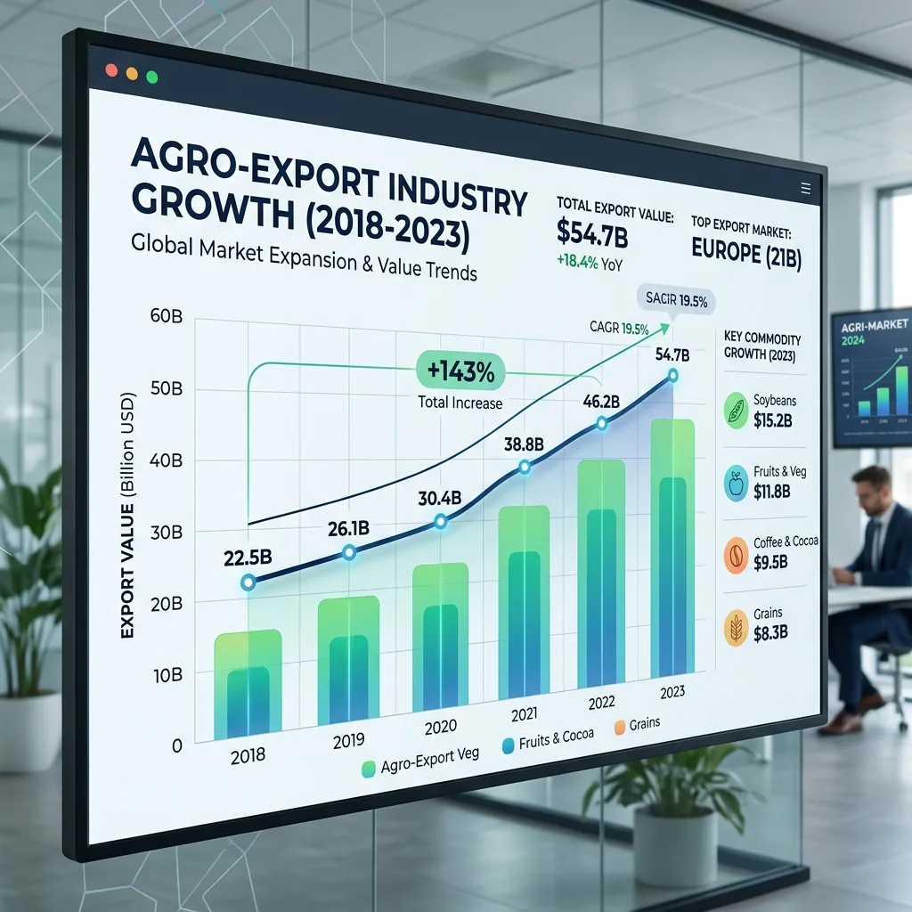
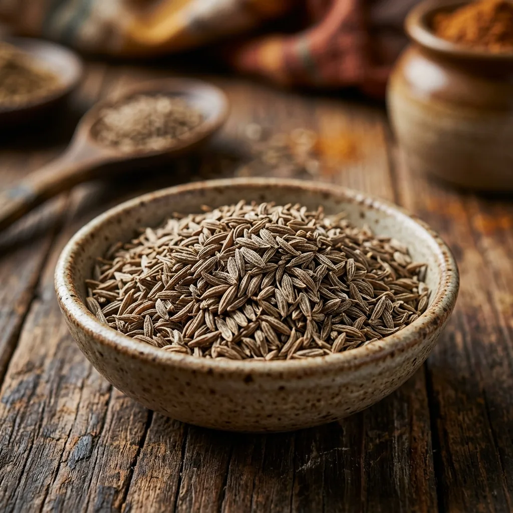

ข่าวกรองตลาด &
ข้อมูลเชิงลึกทางการค้า
คำแนะนำเชิงลึก การวิเคราะห์ตลาด และการอัปเดตกฎระเบียบสำหรับผู้ซื้อสินค้าเกษตรอินเดียจากต่างประเทศ เขียนโดยทีมส่งออกของ JFT Agro

1121 กับ 1509 ข้าวบาสมาติ: คุณควรนำเข้าพันธุ์ใดในปี 2569
สองสายพันธุ์ครองการส่งออกบาสมาติของอินเดียไปทั่วโลก ทั้งสองชนิดเป็นเมล็ดเมล็ดยาว มีกลิ่นหอม และพรีเมียม แต่ให้บริการในตลาดที่แตกต่างกัน ผู้ซื้อต่างกัน และราคาต่างกัน สิ่งที่คุณต้องรู้ก่อนสั่งซื้อตู้คอนเทนเนอร์มีดังนี้

วิธีส่งออกสินค้าจากอินเดียไปยังแอฟริกา: คู่มือฉบับสมบูรณ์พร้อมเอกสาร เงื่อนไขการชำระเงิน และเทมเพลตฟรี
คู่มือการส่งออกทีละขั้นตอนจากอินเดียไปยังแอฟริกา — เอกสารที่จำเป็นทั้งหมด เงื่อนไขการชำระเงิน ข้อกำหนดเฉพาะประเทศสำหรับไนจีเรีย เคนยา กานา แทนซาเนีย และเทมเพลต Proforma Invoice, Commercial Invoice และ Packing List ที่ดาวน์โหลดได้ฟรี...

การส่งออกนิ้วขมิ้นของอินเดียปี 2026: ซาเลมกับนิซามาบัด เกรดและราคา
อินเดียปลูกขมิ้น 75% ของโลก เกรด Salem กับ Nizamabad ข้อมูลจำเพาะของเคอร์คูมิน และเกณฑ์มาตรฐาน FOB ปี 2026...
ส่งออกพริกแดงอินเดียปี 2026: Teja S17, เกรด Guntur และราคา FOB
Teja S17 vs Guntur Sannam vs Bydagi — เกรดไหนสำหรับตลาดของคุณ? หน่วยสโควิลล์ สี ASTA และการทดสอบสีย้อมซูดาน...

ถั่วเขียวส่งออกอินเดียปี 2026: เกรด ขนาด และคู่มือผู้ซื้อ
เกรดการแตกหน่อหนาเทียบกับเกรดการทำอาหารขนาดเล็ก การทดสอบอัตราการงอก ราคา FOB ปี 2569 ตลาดจีนและเกาหลีใต้...

IR-64 ข้าวนึ่งเพื่อการส่งออก: เกรด ตลาด และราคา FOB ปี 2026
IR-64 5% เทียบกับ 25% ที่หัก — สิ่งที่ผู้ซื้อในแอฟริกาตะวันตก อ่าว และเอเชียตะวันออกเฉียงใต้ต้องการจริงๆ มาตรฐานการกัดและเกณฑ์มาตรฐาน FOB ปี 2026...
.webp)
วิธีนำเข้าข้าวอินเดียไปยังไนจีเรียและแอฟริกาตะวันตก: คู่มือฉบับสมบูรณ์
ข้อกำหนดของแบบฟอร์ม M, การลงทะเบียน NAFDAC, การตรวจสอบ SGS, ศูนย์กลางการส่งออกซ้ำของ Cotonou - คู่มือการนำเข้าไนจีเรีย/แอฟริกาตะวันตกฉบับสมบูรณ์...
การส่งออกข้าวอินเดียไปยังศรีลังกาและบังคลาเทศ: ข้อกำหนดและโลจิสติกส์
ข้อได้เปรียบของเส้นทางทะเลระยะสั้น (3–6 วัน) พันธุ์ที่ต้องการตามประเทศ การอนุมัติ BSTI และคำแนะนำเกี่ยวกับเงื่อนไขการชำระเงิน...
การนำเข้าเกษตรอินเดียไปยังเคนยาและแอฟริกาตะวันออก: หน้าที่และเอกสาร
อัตราค่าข้าว EAC 75%, ใบรับรอง KEBS PVoC, เวลาพักของท่าเรือมอมบาซา และการคำนวณต้นทุนที่ดิน...

วิธีอ่านใบแจ้งหนี้ Proforma ส่งออกของอินเดีย: คู่มือฉบับสมบูรณ์
อธิบายทุกส่วนของ PI — คำอธิบายผลิตภัณฑ์ รหัส HS ธงแดงรายละเอียดธนาคาร และความแตกต่างของ PI กับใบแจ้งหนี้การค้า...

ภาษีนำเข้าข้าวอินเดียปี 2026: คู่มือพิกัดอัตราภาษีแต่ละประเทศ
อัตราภาษีสำหรับสหรัฐอาหรับเอมิเรตส์ (0% CEPA), สหราชอาณาจักร (0% DCTS), เคนยา (75%), ไนจีเรีย (110%), สหภาพยุโรป, บังคลาเทศ — พร้อมตัวอย่างการคำนวณต้นทุนที่ดิน...

คำอธิบายการลงทะเบียน APEDA: ผู้นำเข้ามีความหมายอย่างไร
APEDA RCMC กับ IEC, วิธีตรวจสอบออนไลน์, ใบรับรอง BRAC สำหรับบาสมาตี, และเหตุใดไม่มี APEDA = ไม่สามารถส่งออกข้าวจากอินเดียได้...
การตรวจสอบโดยบุคคลที่สามของ SGS สำหรับการส่งออกเกษตรของอินเดีย: วิธีการทำงาน
สิ่งที่ SGS ตรวจสอบตอนโหลด มีอะไรบ้างที่ไม่ครอบคลุม วิธีแนะนำในสัญญาของคุณ และวิธีอ่านใบรับรอง...
เล็ตเตอร์ออฟเครดิตสำหรับการนำเข้าอาหารอินเดีย: คำแนะนำทีละขั้นตอน
กระบวนการ LC 8 ขั้นตอน การมองเห็นเทียบกับการใช้งานเทียบกับ LC ที่ได้รับการยืนยัน ความคลาดเคลื่อนที่พบบ่อยที่สุดในการค้า LC เกษตร และเคล็ดลับในการร่างที่สำคัญ...
คำอธิบายใบตราส่ง: คำแนะนำสำหรับผู้นำเข้าครั้งแรกจากอินเดีย
ฟังก์ชันสามประการของ BL, การปล่อยต้นฉบับเทียบกับเทเล็กซ์, BL แบบคลีนและแบบคำสั่ง และวิธีการใช้สำหรับพิธีการศุลกากร...
ข้าวอินเดียกับไทยปี 2026: ไหนดีกว่าสำหรับตลาดของคุณ?
Variety comparison, 2026 price gap ($50–80/MT), quality differences, and which origin suits which destination market...
สินค้าเกษตรอินเดีย 10 อันดับแรกที่ต้องนำเข้าในปี 2569
ตั้งแต่บาสมาตีและไซเลี่ยมไปจนถึงมะรุมและทูร์ดาล — สินค้าโภคภัณฑ์ 10 อันดับแรกที่มีความได้เปรียบด้านราคาที่ดีที่สุด การเติบโตของอุปสงค์ และการจัดหาที่ง่ายดาย...

วิธีเลือกผู้ส่งออกเกษตรอินเดียที่เชื่อถือได้: รายการตรวจสอบของผู้ซื้อ
ตรวจสอบ IEC, APEDA, GSTIN, MCA ทางออนไลน์ — รวมถึงธงสีแดง 6 ประการที่ส่งสัญญาณถึงซัพพลายเออร์ที่มีความเสี่ยงสูงก่อนที่คุณจะจ่ายเงินใดๆ...

ไซเลี่ยมแกลบส่งออกจากอินเดียปี 2026: เกรด ราคา และคู่มือผู้ซื้อ
อินเดียควบคุมอุปทานไซเลี่ยมทั่วโลกถึง 85% คู่มือนี้ครอบคลุมทุกเกรดตั้งแต่ 85% ถึง 99%, การเปรียบเทียบราคา FOB ปี 2026, ข้อมูลจำเพาะที่สำคัญ และวิธีการจัดหาแหล่งโดยตรงจากผู้ส่งออกชาวอินเดียที่ได้รับการตรวจสอบแล้ว...

แนวโน้มราคายี่หร่าอินเดีย (จีระ) ปี 2026: สิ่งที่ผู้นำเข้าจำเป็นต้องรู้
ราคายี่หร่าเพิ่มขึ้นจาก 20,000 รูปีเป็น 65,000 รูปีต่อ quintal ระหว่างปี 2564 ถึง 2566 จากนั้นจึงกลับมาราคาลดลง การวิเคราะห์นี้ครอบคลุมแนวโน้มราคาปี 2026 การเปรียบเทียบเกรด เกณฑ์มาตรฐาน FOB และเมื่อใดที่จะทำสัญญา...
การค้าเครื่องเทศทั่วโลก: แนวโน้มตลาดขมิ้นปี 2026
เนื่องจากความต้องการของยุโรปสำหรับขมิ้นอินเดียที่อุดมด้วยเคอร์คูมินเพิ่มสูงขึ้น ผู้นำเข้าจึงเผชิญกับห่วงโซ่อุปทานที่ตึงตัว นี่คือของเรา...